06.
Trabajo profesional



Este proyecto consistió en el desarrollo de una línea gráfica dirigida a niños y niñas, en el contexto de un evento organizado por la iglesia Nido de Águilas, cuyo objetivo era comunicar de forma atractiva y comprensible los valores del evento